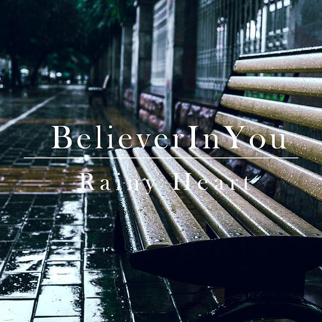
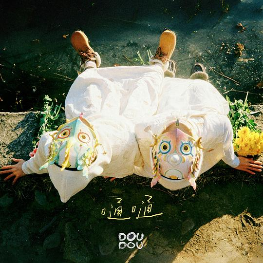
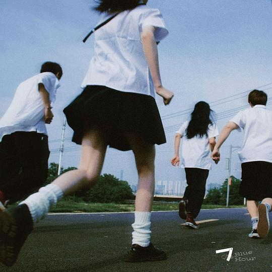
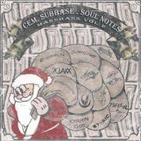
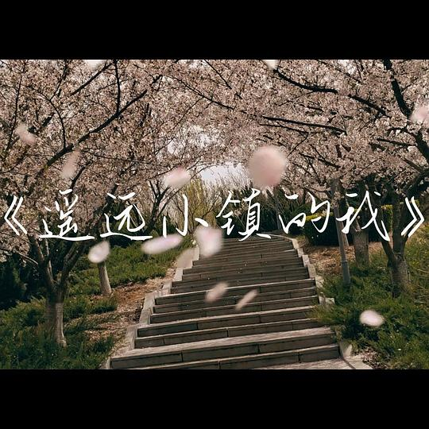
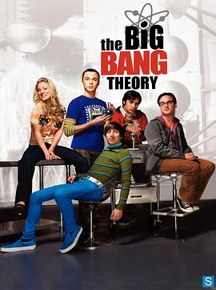

2026年1月
广播发布后不可编辑，所以每条都是那一刻的原话。
2026-01-28 16:09:41
 看过 放学后失眠的你 / 君は放課後インソム二ア ★★★☆☆
看过 放学后失眠的你 / 君は放課後インソム二ア ★★★☆☆
由于篇幅原因删改大部分内容可以理解，但两位主演演技差到这种程度是何种意味，尴尬得令人发指。我本来就蛮喜欢故事的，伊咲心脏病的设定在公交车站时说出的安排还蛮好的。摄影挺漂亮的。
2026-01-27 16:57:03
 看过 四海 ★★☆☆☆
看过 四海 ★★☆☆☆
这么看剧情在春节上映简直离大谱，里面年轻人的价值观也是很离谱。韩寒文风的句子不适合读出来。就这么拍喜剧合家欢多好，偏偏拍苦难厄运以作证自己的故事哲学。摄影太丑了。
2026-01-26 22:17:18
在看 生活大爆炸 第五季 / The Big Bang Theory Season 5 ★★★★★
Raj的包袱怎么这样抖出来的，真让人哭笑不得。
2026-01-26 22:16:28
 看过 生活大爆炸 第四季 / The Big Bang Theory Season 4 ★★★★★
看过 生活大爆炸 第四季 / The Big Bang Theory Season 4 ★★★★★
ep1就笑昏过去了。ep14里cue了一下印度歌舞，hh。怎么企鹅的还是删减版，（恼）！
2026-01-26 12:42:09
 读过 你的名字 Another Side:Earthbound ★★★★☆
读过 你的名字 Another Side:Earthbound ★★★★☆
镇长对妻子的爱教人动容。
2026-01-26 11:48:38
 读过 克林索尔的最后夏天 ★★★☆☆
读过 克林索尔的最后夏天 ★★★☆☆
蛮喜欢口袋本的装帧的。开篇的导语太多余。但最后黑老头喜欢的只是他自以为的中国文化。
2026-01-23 23:58:08
 看过 超时空辉夜姬！ / 超かぐや姫！ ★★★★☆
看过 超时空辉夜姬！ / 超かぐや姫！ ★★★★☆
初心不为百合，更多的是偏袒于原创故事，没想到最后还能用时空穿越来圆了结局。难得又听到ryo的新曲，在这样的宣发模式下看完电影后回味之前一个月发过的所有MV还真是有趣。战斗的部分三选二效果不错，只是有些打斗节奏不对导致软绵绵的。总体来说瑕不掩瑜，山下首次监督就拿出这样的作品，不容易。
2026-01-23 17:35:32
 在读 放学后失眠的你 1-2 ★★★★☆
在读 放学后失眠的你 1-2 ★★★★☆
中信这次还蛮用心的。实在痴迷作者的画风与每话标题里的那颗星星。咲的冲天辫与粗眉毛可真可爱。
2026-01-22 17:00:48
 看过 百米。 / ひゃくえむ。 ★★★★☆
看过 百米。 / ひゃくえむ。 ★★★★☆
背景很好看，彩绘很鲜明。雨里的长镜头效果还不错，把赛前的紧张感体现得淋漓。最后比赛的结果作留白处理，但“奔跑的意义”却已点出：就是奔跑本身。另外转描的技术用在运动片上算是方向对了，《花与爱丽丝》单纯是为了省成本。
2026-01-21 16:30:59
 看过 破·地狱 / 破·地獄 ★★★★☆
看过 破·地狱 / 破·地獄 ★★★★☆
看的特别版，但不知道到底差别如何，也难免会与《入殓师》作比较，这里有了一条文哥的主线，讲了殡仪的本质：给以生者更多慰藉。另外关于“传男不传女”的传统解释有了更多的变化，但“上桌”依旧遭到银幕里大部分的反对，但我相信未来依旧会更好的。破地狱的大场面放在了最后完整展示，效果还蛮好的。
2026-01-20 17:24:51
 在看 葬送的芙莉莲 第二季 / 葬送のフリーレン 第2期 ★★★★☆
在看 葬送的芙莉莲 第二季 / 葬送のフリーレン 第2期 ★★★★☆
ep1所谓原创的部分并没有多少出色的地方，标题的重新表现也只是多了一些花瓣。到底是圣斋藤给我口味养刁了么。
2026-01-19 18:18:51
 看过 震耳欲聋 ★★★★☆
看过 震耳欲聋 ★★★★☆
开头和整体的声音设计蛮在线的，就是不明白两次变换画幅究竟是如何运用，既不在故事上有推动作用，也没承担叙事功能，更没有单纯IMAX画幅的效果。兄弟吵架的拼接长镜头效果不错，但剪辑点还是太明显了。两次的平行蒙太奇太刻意了。不过故事还是不错的，小兰演得很棒，汤律的两次转变稍突兀。母亲陪我看的又一部电影。
2026-01-19 14:34:14
看过 我是余欢水 ★★★★☆
第一集还真蛮窝囊的。故事挺有趣，拍得太随便。陪老妈一起看的。ep8里老舅的眼镜上充满雾气也太有灵性了。哇最后也太随便了。
2026-01-17 20:48:24
看过 甲方乙方 ★★★★☆
贡献了好多名场面，葛大爷真是演啥像啥。有个结婚得婚房的主线，故事蛮清晰的，总体上很符合贺岁的基调，挺面面俱到了。
2026-01-17 18:15:40
 在听 reunion ★★★★☆
在听 reunion ★★★★☆
不明白怎么就解散了。
2026-01-17 18:14:32

好听也好打。
2026-01-14 16:57:34
在看 我是余欢水 ★★★★☆
第一集还真蛮窝囊的。故事挺有趣，拍得太随便。
2026-01-13 19:01:11
听过 泪桥 ★★★★☆
母亲很喜欢《晚风》，我也很喜欢。不太理解同名曲的出圈。为什么京文唱片的宣传词是那句。
2026-01-06 00:47:04
看过 狗的状况 ★★★★☆
什么旁白也没有，但就是一点镜头与一丝哀嚎揪着我心。
2026-01-06 00:42:20
看过 双子杀手 / Gemini Man ★★★★☆
开篇用列车的移动告诉观众高帧率究竟是何感觉，再者史密斯的双子打斗充满了爽点，得益于高帧率动作变得滑腻腻的，但不愧为一大视觉奇观，尤其小号杀手出场时跟镜头速度感把握得很好。李安很会拍，只是故事可圈可点罢了。
2026-01-06 00:35:06

可惜莫名其妙下架了。
2026-01-05 19:45:38
在看 生活大爆炸 第四季 / The Big Bang Theory Season 4 ★★★★★
ep1就笑昏过去了。
2026-01-05 17:34:42

今年下雪时我才发现这首歌在Apple Music下架了，也忘记什么时候是听着这首歌夜间归宿了，只留下昏黄的路灯印象了。
2026-01-05 17:32:59
听过 YOU & IDOL / キッズ・ノーリターン ★★★★★
悦子的声音太抓耳了。动听。
2026-01-05 17:25:54

喜欢《dreamland》。
2026-01-05 17:25:19

弦乐的旋律很动听。
2026-01-05 17:25:10
 在听 春意红包 ★★★★★
在听 春意红包 ★★★★★
这会又要过年咯。
2026-01-05 17:05:01

感情又回到了起点么。从此季开始我发现编剧会在一些实际无法完美解决的问题上重拿轻放，在下一集便完全不见踪影，除非一些重要伏笔或设定才会留下复用。ep23里与其交流难如登天的谢耳朵也终于要有个伴了么。
2026-01-05 14:58:21
在看 彻夜之歌 / よふかしのうた ★★★★☆
这里的夜晚并非传统意义上的，而是五光十色、霓虹紫赯的允许逃避的领域了。所以我很中意这里小荠出场与之后玩耍的氛围。电子乐很加分。
2026-01-03 21:47:59
 在读 錯位的青春 1 ★★★★☆
在读 錯位的青春 1 ★★★★☆
画面蛮别致的。
2026-01-01 14:37:31
看过 辉夜大小姐想让我告白：通往大人的阶梯 / かぐや様は告らせたい 大人への階段 ★★★★★
去掉了所有雷回，用倒叙的方式回忆了一些经典片段。其中辉夜打电话时裂焦的演出很令人眼前一亮。妹妹焦急的神态与后篇亲热的场景作画意外流畅，A1的技术力真是高。
2026-01-01 09:59:55
在看 生活大爆炸 第三季 / The Big Bang Theory Season 3 ★★★★★
感情又回到了起点么。